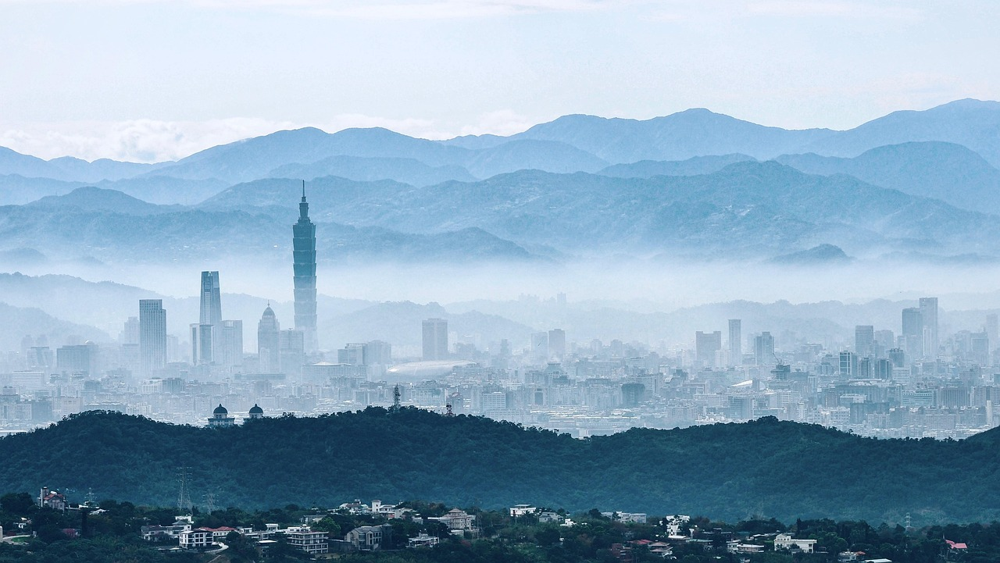
블로그
교통, 선물, 맛집까지 — 대만 여행 전반에 도움되는 정보를 실제 여행자들의 경험을 바탕으로 정리해요.
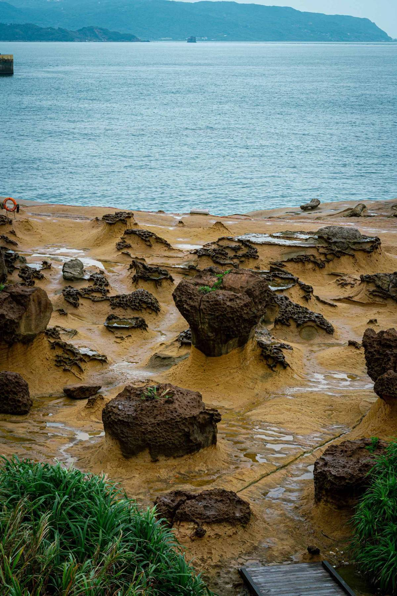
타이베이 펀패스 3일권, 본전 뽑으려면 어떻게 써야 할까?
무제한 3일권 가격과 포함 항목, 달력 날짜 계산법, 101·마오콩 교환 방법을 정리했어요.
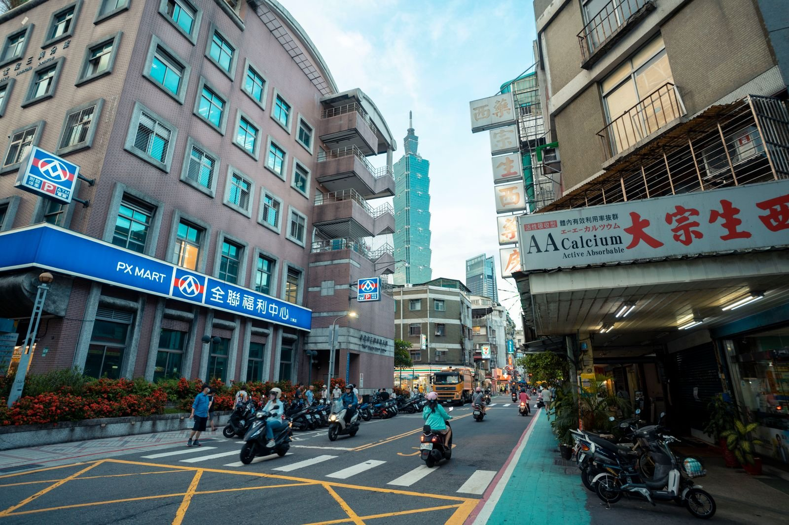
타이베이 춘절 백화점 영업, 신이 상권은 연휴에 문 열까?
2026년 춘절 영업 실적을 바탕으로 2027년 연휴에 신이 상권을 다닐 때 확인할 점을 정리했어요.
타이베이 101 전망대 아이 요금, 키가 기준일까 나이가 기준일까?
외국인 아이는 키 115cm가 기준이에요. 성인·우대·무료 조건과 발권 위치를 정리했어요.

대만 석가 시즌, 일반석가랑 파인애플 석가 뭐가 다를까?
지금이 일반석가 성수기예요. 파인애플 석가와의 제철·맛·대략 시세를 정리했어요.

가오슝 BTS 콘서트 숙소, 국가체육장 가려면 어디에 묵을까?
11월 가오슝 국가체육장 공연, 숙소 위치와 MRT 이동, 실명제 예매 포인트를 정리했어요.
타오위안공항 새벽 도착, 시내까지 뭐 타고 갈까?
공항철도가 끊긴 시간, 1819 버스와 택시 중 뭘 탈지 요금·타는 곳과 함께 정리했어요.
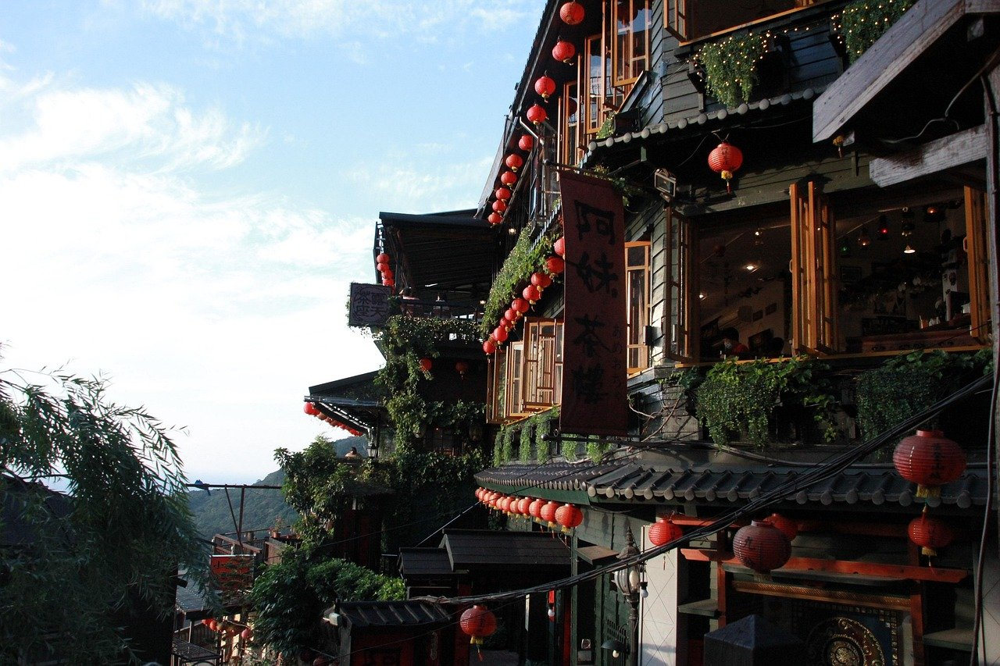
예류 지우펀 버스, 캐리어 들고 이동해도 될까?
예류에서 지우펀까지 지룽 환승·루이팡 경유 두 가지 길과 캐리어 보관 요령을 정리했어요.
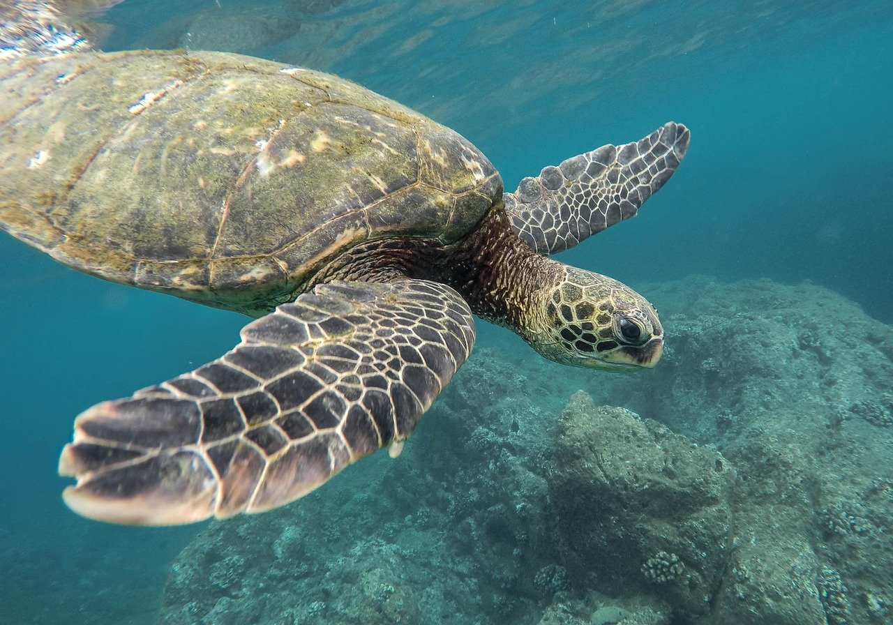
소류구 전기자전거 대여, 번호판·면허 규정 괜찮을까?
전기자전거와 전동 스쿠터는 규정이 달라요. 번호판·보험·면허와 벌금 기준을 정리했어요.
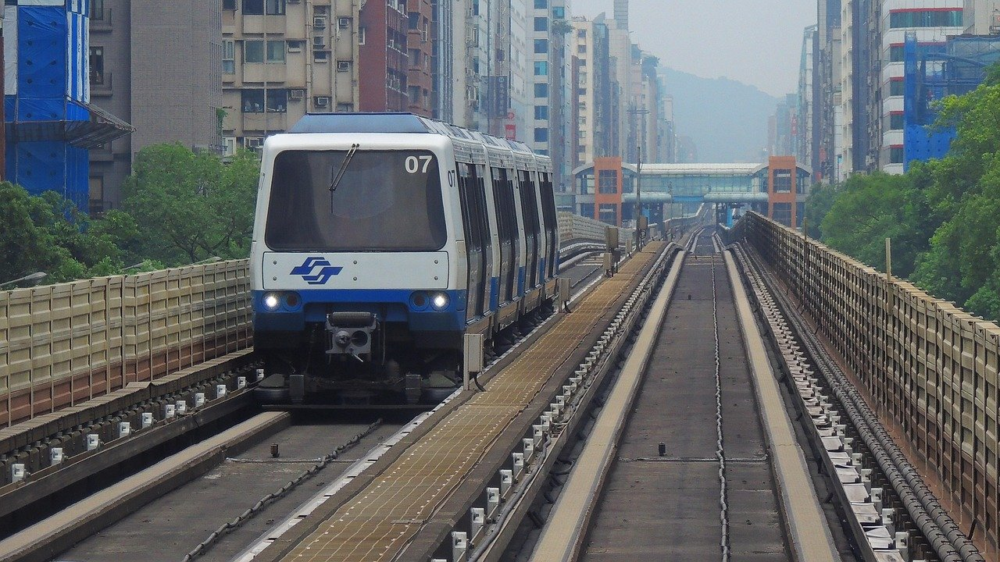
이지카드 잔액 조회, 앱으로 하려면 어떤 카드여야 할까?
앱 조회가 되는 카드와 안 되는 카드, 역·편의점에서 잔액 보는 법을 정리했어요.

대만 여행 가이드북 추천, 첫 여행 전에 읽을 책 2권은?
전역 가이드북 한 권, 마트 쇼핑 책 한 권 — 대만 첫 여행 전에 읽기 좋은 두 권을 정리했어요.
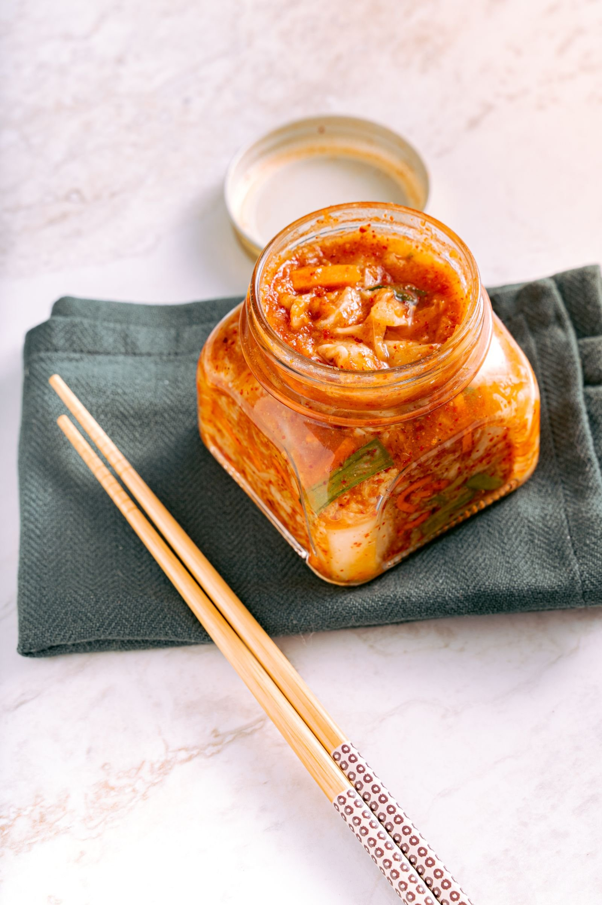
대만 여행 김치 기내 반입, 캔 볶음김치는 어떻게 챙길까?
캔 김치는 기내? 위탁? 액체류 기준과 대만 돼지고기 반입 금지까지 한 번에 정리했어요.
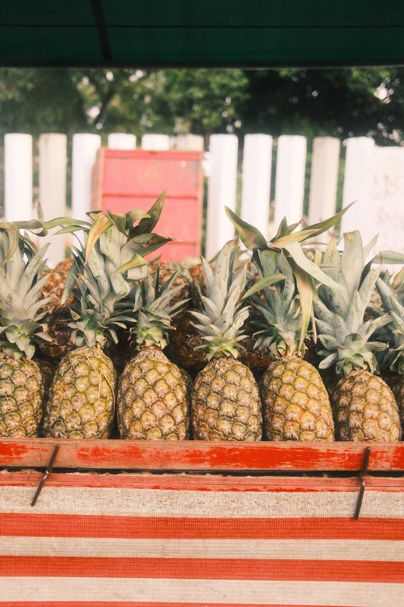
대만 펑리수 브랜드 비교, 치아더·치메이·써니힐즈 중 뭘 살까?
치아더·치메이·써니힐즈, 소 재료와 가격대, 사기 좋은 곳을 한 표로 비교했어요.
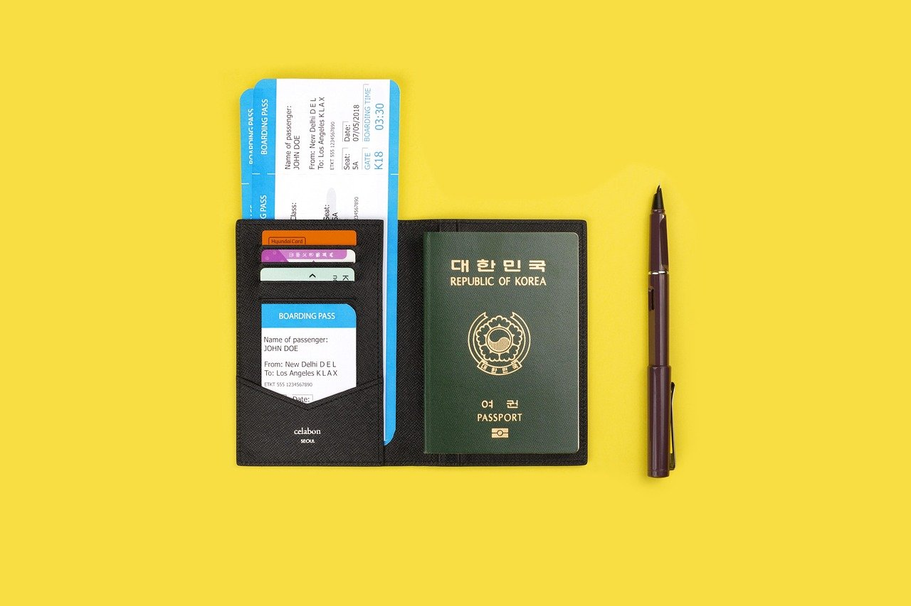
대만 입국신고서 TWAC, 언제 어떻게 작성하면 될까?
종이 신고서는 끝, 이제는 온라인 TWAC — 작성 시기와 가족 대리 작성, 주의할 점을 2026년 기준으로 정리했어요.
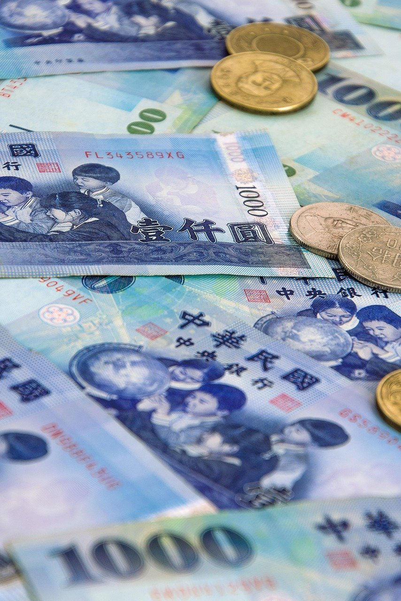
대만 재방문 여행 지원금 2026, 누가 어떻게 받을 수 있을까?
재방문 자유여행객 추첨으로 NT$5,000, 동행 1명 NT$3,000 — 자격과 등록 시기, 수령 방법 정리.
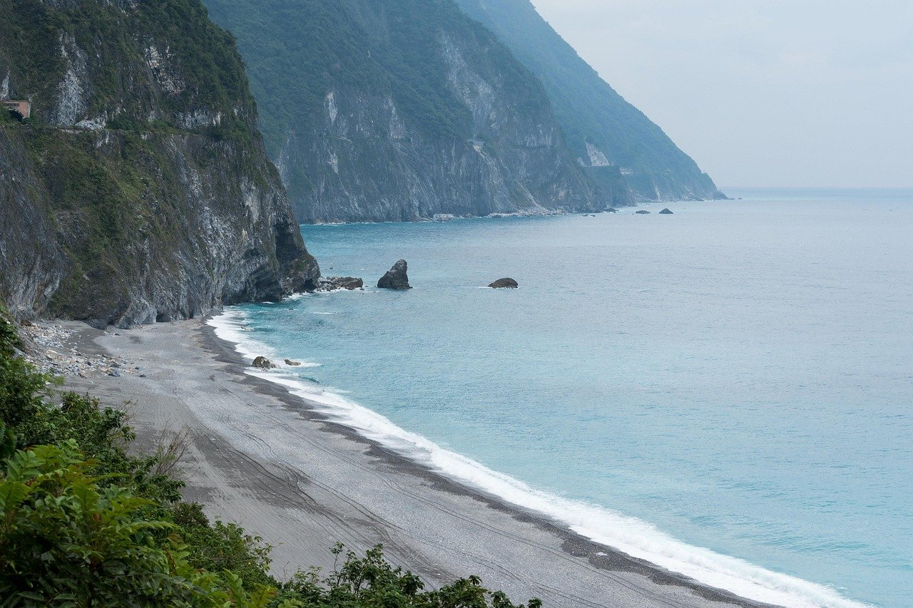
화롄 숙소 위치, 역 앞·시내·바다 전망 중 어디가 편할까?
화롄역 앞, 시내, 치싱탄 바다 쪽 — 이동 수단과 일정에 맞는 화롄 숙소 위치를 비교했어요.
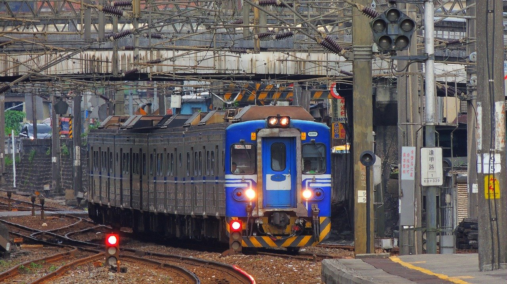
타이베이 말고 어디 갈까? 대만 여행 지역 추천, 일정별 선택표
가오슝·타이난·타이중·화롄 중 어디가 맞을까 — 여행 일수와 관심사별 지역 선택표.

타이베이 타이난 3박4일, 이동 줄이려면 며칠씩 나눌까?
3박4일에 타이베이와 타이난을 모두 넣고 싶다면 — 숙박 배분안 세 가지와 고속철 이동 팁을 비교했어요.
2026 쌍십절 대만 여행, 연휴 기간에 가도 괜찮을까?
2026 쌍십절 연휴에 대만을 간다면 — 불꽃놀이 장소, 국경 만회, 교통 통제와 숙소 팁을 정리했어요.
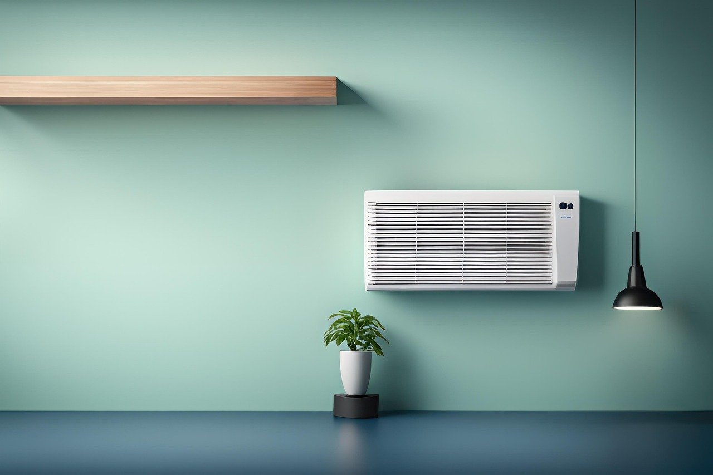
대만 여행 옷차림, 숙소 에어컨까지 생각하면 계절별로 뭘 챙길까?
밖은 찜통, 실내는 냉장고 — 대만 여행 계절별 옷차림과 냉방 대비, 날씨 확인법을 정리했어요.
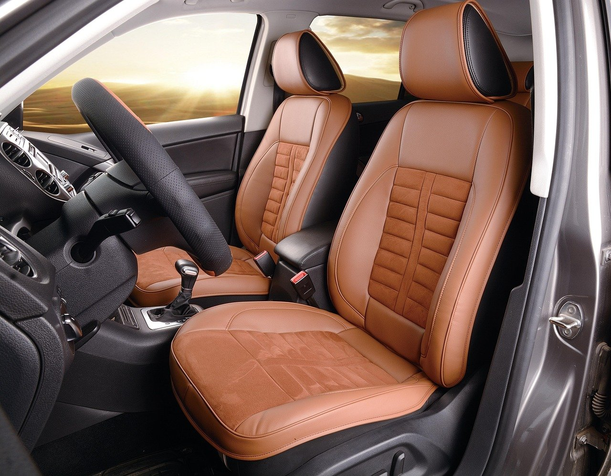
대만 가족여행 프라이빗 택시, 예약 전에 뭘 확인해야 할까?
가족 단위로 전세 택시를 예약할 때 — 차종, 요금에 포함되는 것, 픽업 조건, 카시트까지 체크리스트로 정리했어요.
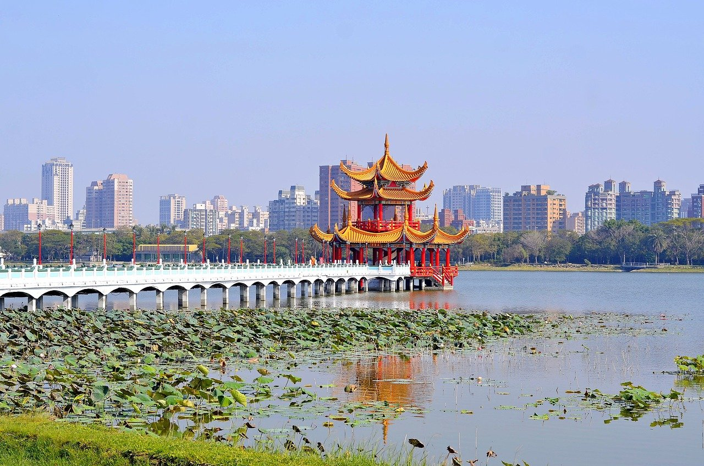
가오슝 3박4일 부모님 일정, AI가 짠 그대로 가도 될까?
AI가 짜준 가오슝 일정을 엄마와 다니기 편하게 고치는 법 — 과밀, 휴관일, 이동 거리 점검 포인트.
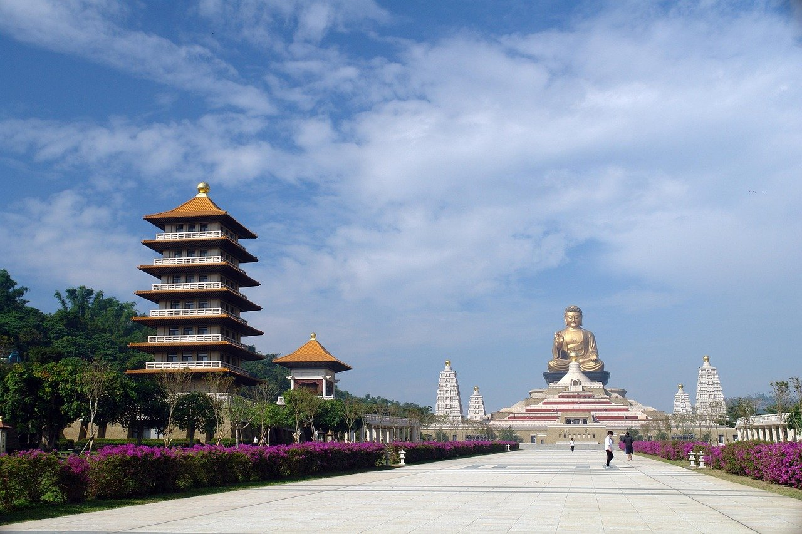
불광산 부모님 동반 여행, 불타기념관 계단·이동 괜찮을까?
걷기 부담이 있는 부모님과 불광산에 간다면 — 교통, 휠체어 대여, 셔틀, 휴관일을 한 번에 정리했어요.
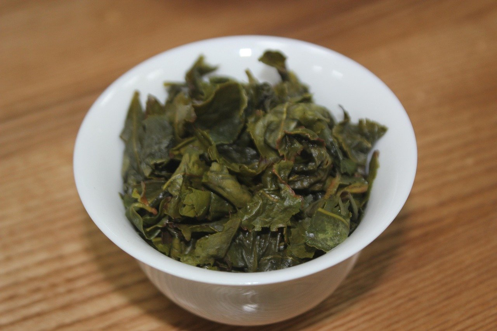
가오슝 동네 차행에서 일상용 차 사기, 관광지 가게와 뭐가 다를까?
관광지 기념품 말고 동네 차행에서 매일 마실 차를 사는 법 — 종류, 단위, 고르는 요령을 정리했어요.
타이베이 숙소 위치 비교 — 시먼 vs 메인역 vs 중산, 어디가 편할까
쇼핑·야시장이 좋으면 시먼, 공항 이동이 우선이면 메인역, 조용한 카페 감성을 원하면 중산. 세 지역을 기준별로 비교했어요.
타이베이 마지막 날 오후 비행기, 공항 가기 전 어디까지 다녀올까
16:55 같은 오후 비행기라면 마지막 날 반나절이 통째로 남습니다. 짐 보관부터 공항 이동 시간까지 역산해서 짜는 반나절 코스.
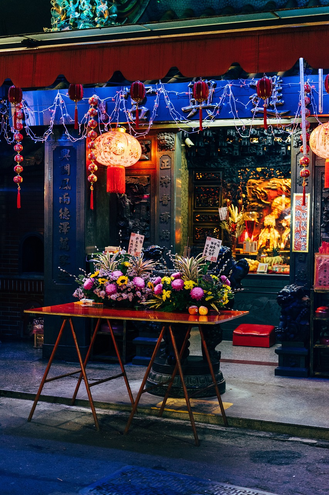
용산사는 낮보다 밤? 야경 시간대와 주변 코스 짜는 법
붐비는 낮 시간을 피해 야경으로 즐기는 용산사. 방문 시간대별 분위기 차이와 완화 야시장 연계 코스를 정리했어요.
지우펀, 금요일 vs 일요일 언제 덜 붐빌까
초등학생 자녀와 함께라면 특히 중요한 혼잡도 문제. 요일별·시간대별 체감 혼잡도와 방문 타이밍 팁을 정리했어요.
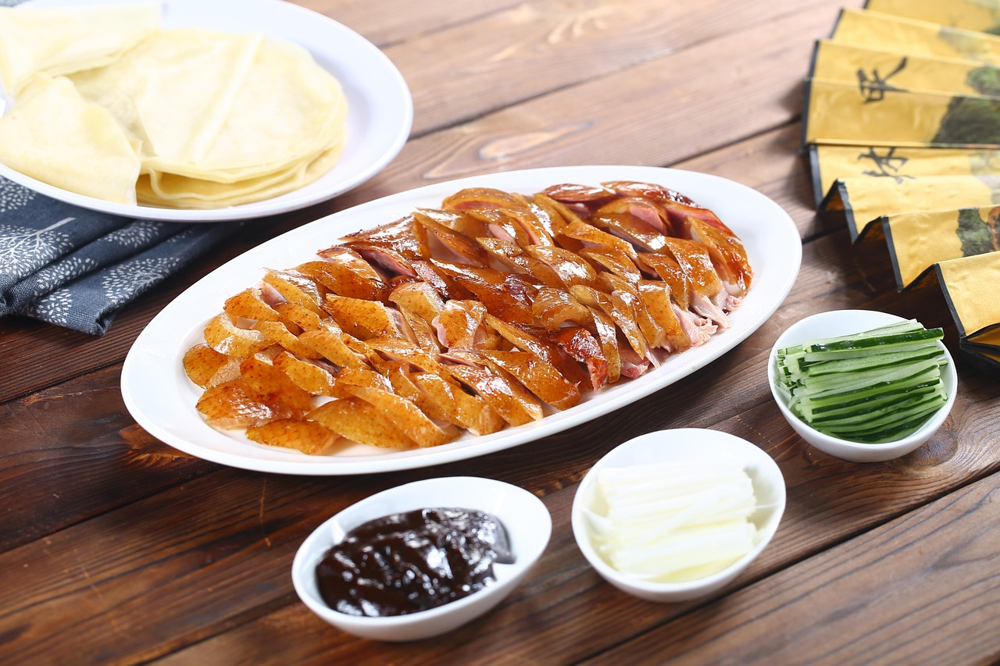
베이징덕 맛집 샹덕(享鴨) 먹고 어디 갈까 — 중샤오둔화 반나절 코스
예약 필수인 베이징덕 맛집 샹덕에서 식사하고, 도보·MRT로 가볍게 돌아볼 수 있는 주변 반나절 코스를 짜봤어요.
대만 간식·술, 기내 반입 될까 위탁수하물로 부쳐야 할까
젤리·푸딩 같은 말랑한 간식부터 고량주까지 — 액체·젤류 반입 기준과 주류 면세 한도를 한 번에 정리했어요.

타이베이 마지막 날, 숙박 없이 새벽 비행기 타도 될까?
마지막 날 밤 숙소를 잡지 않고 새벽 비행기를 타는 '무박' 일정. 실제 여행자들의 경험을 바탕으로 장단점과 시간 활용법을 정리했어요.

대만 여행 선물 추천 — 뻔한 간식 말고 뭘 사올까?
펑리수·누가크래커는 다들 사 오는 국룰이죠. 그래도 새로운 선물을 찾는다면, 브랜드별 비교와 가성비 팁까지 정리했어요.
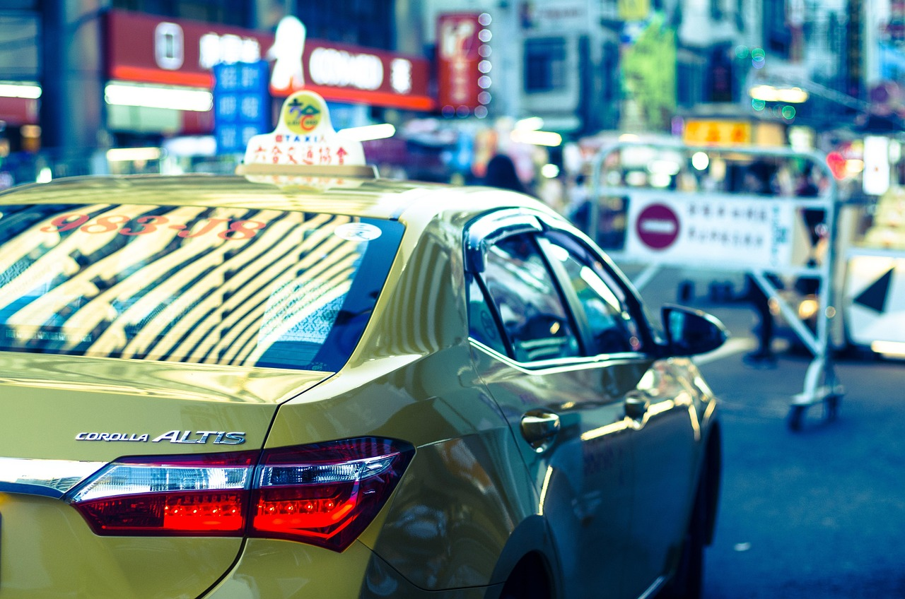
타이베이 첫 여행 3박4일, 이지카드만으로 충분할까?
이지카드, 신용카드 컨택리스 결제, 버스, 택시(우버)까지 — 첫 타이베이 여행자를 위한 교통수단 총정리.

타이베이·타이중·가오슝, 엄마와 가는 첫 대만 여행 어디가 편할까
이동 난이도, 관광 밀도, 부모님 동선까지 — 세 도시를 비교해서 첫 대만 여행지를 골라봤습니다.